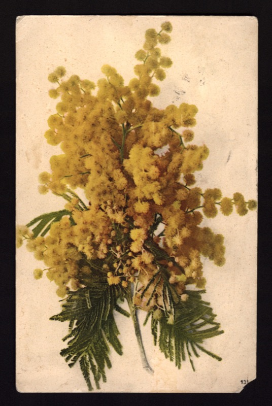
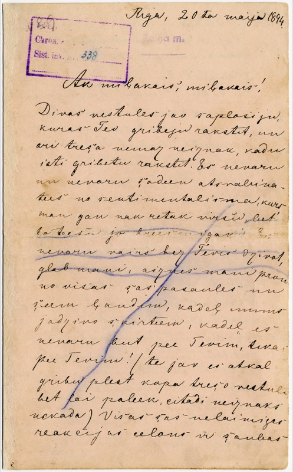

The map shows birthplaces, grouped when writers share a place. Positions are approximate at settlement level. Present-day borders provide orientation and do not describe historical political boundaries.
Authors, holding institutions, digital providers, and item-specific reuse statements are recorded below. Archival images are used within the existing page design. Web files retain the full frame; decorative display crops are applied with CSS. The original colours are retained.

Aspazija to Rainis
Bern, 22 November 1908. Illustrated postcard. Latvian.
Original held by Literature and Music Museum (Rakstniecības un mūzikas muzejs). Reference: RTMM 70998.
Digital images: National Library of Latvia · RUNA, Rainis un Aspazija. Source record.
Source and reuse statement checked 9 November 2026. Web copies resized; original colours retained. Decorative display crops are applied with CSS.
The isolated mimosa used as a decorative motif is an adaptation of this postcard, made with AI-assisted background removal. It is not presented as an archival facsimile. The original postcard scan is retained.

Aspazija to Rainis
Riga, 20 May 1894. Handwritten letter. Latvian.
Original held by Literature and Music Museum (Rakstniecības un mūzikas muzejs). Reference: Asp. K 2/4 · inv. no. 15619.
Digital images: National Library of Latvia · RUNA, Rainis un Aspazija. Source record.